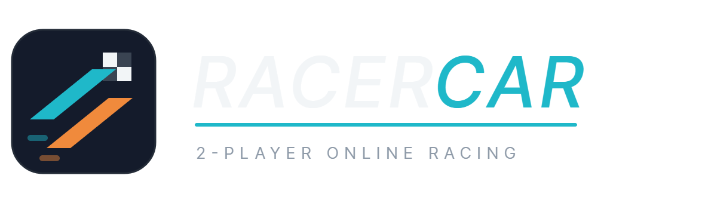

Personal project — playable below
2-player online multiplayer racing game. Host Mode networking with input authority and full player spawn/despawn lifecycle, dependency injection via Zenject with a custom NetworkObjectProvider, PiP rival camera feed, and a WebGL build deployed to GitHub Pages through a GitHub Actions + game-ci pipeline.
// TECH STACK
// GAMEPLAY VIDEOS
Intro
Main Menu
Loading
Settings
Gameplay
// PLAY IN BROWSER
Loads the WebGL build in this frame
Tip: open in two browser windows to race against yourself. View source on GitHub →